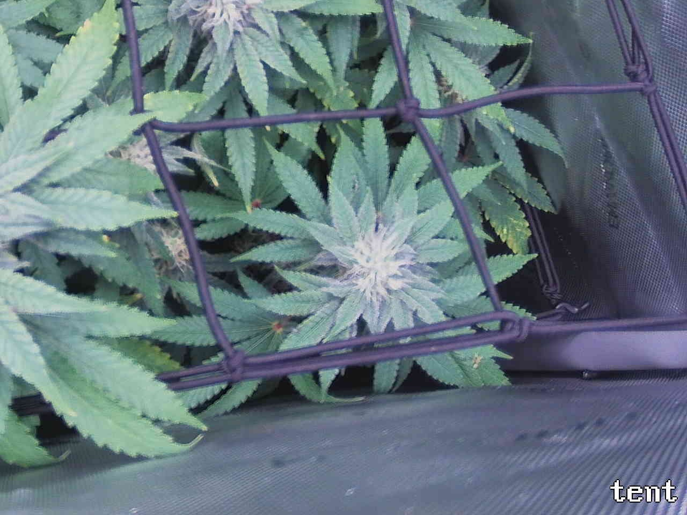
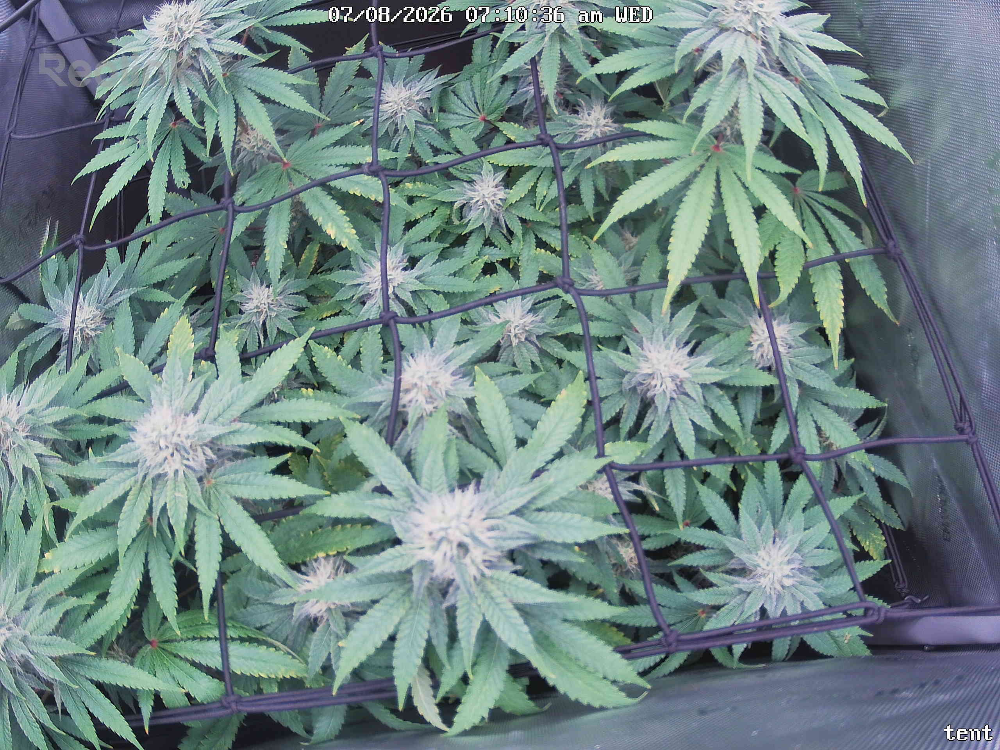

Per-quadrant analysis — the canopy shot was split into a 2x2 grid and each region compared against the previous day.
Overall assessment: All four quadrants report Status: OK — no quadrant is flagged ATTENTION. The plant is progressing normally for mid/late flower: pistil development and trichome frost are advancing (notably denser/frostier in the bottom-right cola vs. 7/7), structure is stable with no new node stall, droop, clawing, tacoing, bleaching, or pest/mold signs anywhere across the canopy. Day-over-day trend is flat-to-improving — essentially unchanged bud/leaf positions with incremental frost/pistil gains, consistent with an ~11h interval.
The one recurring issue present in all four quadrants is scattered yellow leaf-margin/tip fading on interior/older fan leaves, unchanged in extent from prior days and consistently attributed to normal late-flower senescence rather than active deficiency. However, every quadrant's own assumptions flag that this pattern is also consistent with potassium deficiency per the KB symptom index, and none of the four reports has ruled it out via closer inspection — this is a photo-only judgment repeated four times, not four independent confirmations. Red petiole/junction coloration is likewise present across all quadrants and consistently treated as the same stable, cause-undetermined benign anthocyanin finding.
Single most important action: since the yellowing is stable and confined to older/shaded leaves (not spreading to tops or new growth), no intervention is needed today, but if it begins appearing on newer/upper leaves in the next report, escalate to a potassium-deficiency check rather than continuing to default to "senescence."
Bud sites (whole plant, estimate): 13-20
Bud sites: 4-6
Bud sites: 4-6
Bud sites: 2-3